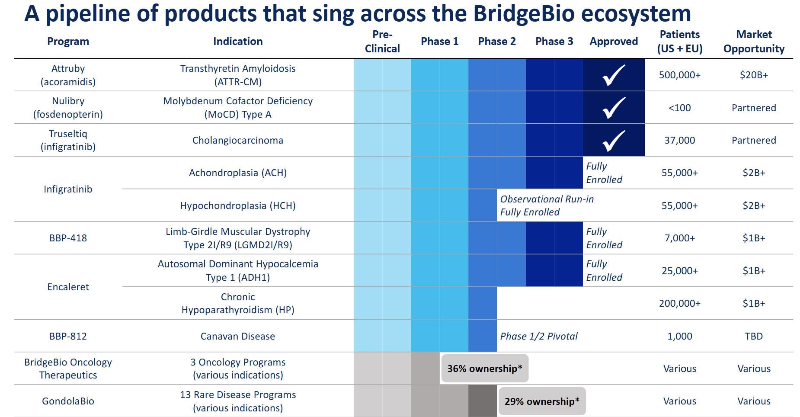

Mangement
Intro to Management: I have been following this company for about a year now, and I am very impressed with the quality of management. There are a few key areas of business that I think a management team has to demonstrate expertise in to build a long term winning biotech company.
Clinical Development: They need expertise at advancing drugs through the clinical development process. They advanced one drug all the way through phase 3 to commercial approval with Attruby. They have three other drugs in mid to late stage development with Infigratinib in Achondroplasia, Encaleret in ADH1 and BBP-418 in Limb Girdle. They have an early stage program in the clinic for Canavan Disease. So far, they have demonstrated good skill at running clinical trials.
Regulatory Development: They need expertise at navigating the regulatory process with the FDA. They managed to navigate one program all the way to commercial approval with Attruby. They have shown they can navigate the FDA process with some success. I would like to see at least one more of their drugs get through approval before I feel confident about their ability to navigate the regulatory process.
Managing Balance Sheet: They need expertise at managing the balance sheet. They have about $756 million in cash and about $1.8 billion in total debt. Attruby sales hit $71.5 million in the second full quarter of sales. That is nearly 100% growth over the first quarter. They did a royalty deal in the quarter to raise some cash giving away some of the Europe royalties.
Commercial Sales: The final key expertise for a management team is the ability to build a successful commercial sales team. They are 2 quarters into the launch of Attruby and sales have been growing very strong. They hit $71.5 million sales in Q2. They could hit over $500 million sales in the first year of commercial launch.
